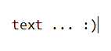

| Submit Your Work | ||
| Thanks for considering submitting to the anthology! If you have had direct, personal contact with Virginia's Department of Juvenile Justice, whether it be through working in it, having a friend or child who has been in the system, or having been in it yourself, you are welcome to submit any art or writing that you feel is appropriately connected to your experience. I look forward to seeing (and sharing) your work! :) | ||
Option 1: File UploadUpload a written piece or visual art submission directly from your computer. For photos of artwork, please make sure the camera is level and the area is well-lit without shadows. Note: If you are using a school- or work-specific email account, you may be unable to access the form due to sharing restrictions within your organization. Fill out the form here. |
Option 2: Copy/PasteCopy and paste your written submission into the text box. Please note that this will not work with visual art; non-written pieces should be submitted using Option 1 or Option 3. Fill out the form here. |
Option 3: Email MeEmail me the work you would like to submit, along with its title. You may optionally include your name and other information about you if you would like that to be published with the piece. Also, feel free to email me with any questions about the project or the submission process in general. I'm always happy to help! justiceinourhands22@gmail.com autumn.ryan@cgs.k12.va.us |